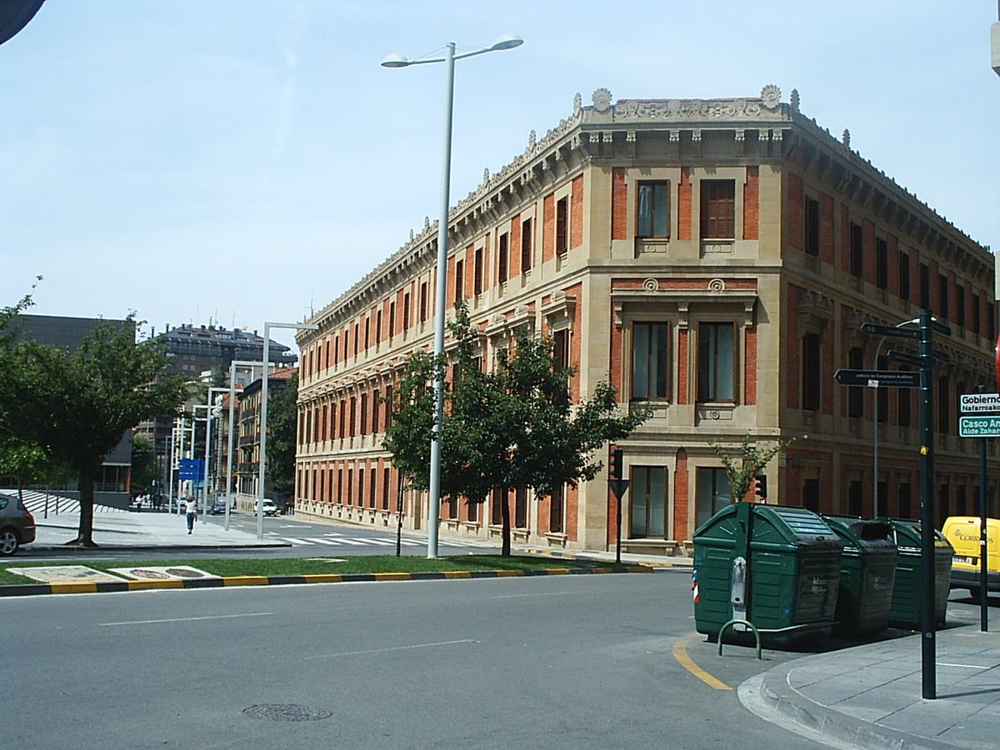

스페인 팜플로나, 치안대 청사 지붕에 130kW 태양광…동네 상점·소기업·가정이 0.5kW 지분 260개로 나눠 쓰는 에너지공동체 가동

비영리 결사체 '엔산체 팜플로나 지역에너지공동체', 3년 준비 끝에 패널 220장…사업비 18만1,908유로 중 국가 보조 7만1,900유로, 생산 전기 90% 회원 배정
스페인 북부 나바라 지방 팜플로나의 치안대(Guardia Civil) 관구 청사 지붕에 태양광 패널 220장을 올려 반경 5km 안의 상점과 소기업, 가정이 전기를 나눠 쓰는 '엔산체 팜플로나 지역에너지공동체(CEL Ensanche Pamplona)'가 가동에 들어갔다. 총 130kW 설비는 0.5kW 단위 지분 260개로 나뉘어, 참여자는 자기 건물을 고치거나 지붕을 갖추지 않고도 동네에서 만든 태양광 전기를 받으며, 전력망에서 따로 사야 하는 전기의 가격도 회원들이 함께 협상할 수 있다. 사업비 18만1,908유로 가운데 7만1,900유로는 국가 에너지다변화절약연구소(IDAE) 보조금으로, 나머지는 CaixaBank 금융으로 마련했으며, 행정 절차와 자금 마련에 3년이 걸렸다. 공동체는 비영리 결사체로 운영되고, 지금 생산 전기의 90%가 회원에게 배정됐으며 새 상점·기업·주민의 가입을 계속 받는다. 갈리시아 대로에 있는 청사 지붕은 치안대가 내줬고 나바라 상공회의소와 엔산체 상권 단체, 나바라 의사협회가 함께 사업을 꾸렸는데, 15kW를 배정받은 의사협회는 다른 회원이 쓰고 남는 전기도 맡아 쓴다. 나바라 상공회의소는 앞서 지자체 25곳과 14곳이 각각 참여한 지역에너지공동체 두 곳도 이끌었다.
시민에너지 관점
0.5kW라는 작은 단위로 지분 260개를 나눈 것은 지붕이 없는 세입자와 동네 가게도 발전소의 주인이 될 수 있게 문턱을 낮춘 설계다. 치안 시설 같은 공공기관 건물을 시민 사업에 내주기는 어렵다는 걱정이 나올 수 있지만, 이번 사례에서 치안대는 지붕만 내주고 운영과 배분은 비영리 공동체가 맡아 그 걱정을 비켜 갔다. 벨기에 플랑드르의 에너지협동조합 에코파워(Ecopower)가 1991년 작은 출자로 시작해 조합원 수만 명 규모로 자랐듯, 작은 지분이 모이면 지역 전력의 한 축이 된다. 국내에서도 경찰서·소방서·청사 지붕을 주민 공동 소유 태양광에 열 수 있도록 공공부지 임대 규정을 고치고, 소액 지분으로 참여할 길을 넓혀야 한다.
출처: Pamplona Actual 2026-11-05 José A. Navidad 원문 보기
スペイン・パンプローナ、治安警察庁舎の屋根に130kWの太陽光…近隣の商店・小企業・家庭が0.5kWの持ち分260口で分け合うエネルギー共同体が稼働
非営利団体「エンサンチェ・パンプローナ地域エネルギー共同体」、3年の準備を経てパネル220枚…事業費18万1,908ユーロのうち国の補助7万1,900ユーロ、発電量の90%を会員に配分
スペイン北部ナバラ州パンプローナにある治安警察（Guardia Civil）管区庁舎の屋根に太陽光パネル220枚を設置し、半径5km以内の商店や小企業、家庭が電力を分け合う「エンサンチェ・パンプローナ地域エネルギー共同体（CEL Ensanche Pamplona）」が稼働を始めた。合計130kWの設備は0.5kW単位の持ち分260口に分けられ、参加者は自分の建物を改修したり屋根を用意したりしなくても近所でつくった太陽光の電気を受け取ることができ、系統から別途購入する電力の価格も会員がまとめて交渉できる。事業費18万1,908ユーロのうち7万1,900ユーロは国のエネルギー多様化・節約研究所（IDAE）の補助金で、残りはCaixaBankの融資でまかない、行政手続きと資金調達に3年を要した。共同体は非営利団体として運営され、現在は発電量の90%が会員に割り当てられており、新たな商店・企業・住民の加入も引き続き受け付けている。ガリシア通りにある庁舎の屋根は治安警察が提供し、ナバラ商工会議所、エンサンチェ地区の商業団体、ナバラ医師会が共同で事業を進めた。15kWの割り当てを受けた医師会は、他の会員が使い切れなかった電力も引き受ける。ナバラ商工会議所はこれまでに、自治体25団体と14団体がそれぞれ参加する地域エネルギー共同体2件も主導している。
市民エネルギーの視点
0.5kWという小さな単位で持ち分260口に分けたことは、屋根を持たない借家人や近所の店も発電所の持ち主になれるよう敷居を下げた設計だ。治安機関のような公的施設を市民の事業に提供するのは難しいとの懸念もありうるが、今回治安警察は屋根を貸すだけで、運営と配分は非営利の共同体が担うことでその懸念をかわした。ベルギー・フランデレン地方のエネルギー協同組合エコパワー（Ecopower）が1991年に小口の出資から始まって組合員数万人規模に育ったように、小さな持ち分も集まれば地域の電力の一角を担う。韓国でも警察署・消防署・庁舎の屋根を住民の共同所有の太陽光に開けるよう公有地の賃貸規定を改め、小口の持ち分で参加できる道を広げるべきだ。
出典: Pamplona Actual 2026-11-05 José A. Navidad 原文を読む
西班牙潘普洛纳国民警卫队大楼屋顶建130千瓦光伏…周边商店、小企业和家庭以260份0.5千瓦份额共享的能源社区投入运行
非营利协会“潘普洛纳扩展区地方能源社区”历时3年筹备装设220块面板…投资18.1908万欧元，其中国家补助7.19万欧元，90%发电量已分配给成员
西班牙北部纳瓦拉地区潘普洛纳的国民警卫队（Guardia Civil）指挥部大楼屋顶装上了220块光伏面板，由半径5公里内的商店、小企业和家庭共享电力的“潘普洛纳扩展区地方能源社区（CEL Ensanche Pamplona）”已投入运行。总装机130千瓦的设备分为260份、每份0.5千瓦，参与者无需改造自家建筑、也不必拥有屋顶，就能用上本街区生产的光伏电力，成员还可以就需从电网购买的电力价格共同议价。项目投资18.1908万欧元，其中7.19万欧元来自国家能源多样化与节能研究所（IDAE）的补助，其余由CaixaBank融资，行政手续和筹资花了3年时间。社区以非营利协会形式运营，目前90%的发电量已分配给成员，并继续接受新的商店、企业和居民加入。加利西亚大道上的大楼屋顶由国民警卫队提供，纳瓦拉工商会、扩展区商业团体和纳瓦拉医师协会共同推动了项目；分到15千瓦的医师协会还负责消纳其他成员用不完的电力。纳瓦拉工商会此前还主导了分别有25个和14个市镇参与的两个地方能源社区。
市民能源视角
以0.5千瓦这样的小单位分出260份，是一种降低门槛的设计，让没有屋顶的租户和街边小店也能成为电站的主人。有人会担心把治安机关这样的公共建筑交给市民项目并不容易，但这次国民警卫队只提供屋顶，运营和分配由非营利社区负责，绕开了这一顾虑。比利时弗拉芒地区的能源合作社Ecopower于1991年从小额出资起步，发展到数万名社员的规模，可见小份额聚在一起也能撑起地方电力的一角。韩国也应修改公共用地租赁规定，让警察局、消防署和政府楼的屋顶向居民共有的光伏开放，并拓宽以小额份额参与的渠道。
来源: Pamplona Actual 2026-11-05 José A. Navidad 查看原文
Spain's Pamplona starts up a 130 kW solar energy community on a Guardia Civil building roof, shared by local shops, small firms and households in 260 stakes of 0.5 kW
Non-profit "Ensanche Pamplona Local Energy Community" installs 220 panels after three years of preparation; 181,908-euro project gets 71,900 euros in state aid, with 90% of output already allocated to members
A local energy community that lets shops, small businesses and households within a 5 km radius share power from 220 solar panels on the roof of the Guardia Civil's provincial headquarters in Pamplona, in Spain's northern Navarre region, has started operating. The 130 kW installation of the CEL Ensanche Pamplona is split into 260 stakes of 0.5 kW each, so participants receive solar power produced in their own neighbourhood without building work or a roof of their own, and members can also negotiate together the price of the electricity they still need to buy from the grid. Of the 181,908-euro project cost, 71,900 euros came as a grant from the national Institute for Energy Diversification and Saving (IDAE) and the rest through CaixaBank financing, and the paperwork and fundraising took three years. The community operates as a non-profit association; 90% of its output has now been allocated to members, and it remains open to new shops, businesses and residents. The Guardia Civil provided the roof of its building on Avenida de Galicia, and the project was put together with the Navarre Chamber of Commerce, the Ensanche shopping district association and the Navarre Medical Association, which has been allocated 15 kW and also takes any power other members do not use. The Navarre Chamber of Commerce has previously led two other local energy communities involving 25 and 14 municipalities respectively.
Citizen Energy View
Dividing the system into 260 stakes of just 0.5 kW lowers the threshold so that tenants without a roof and corner shops can also become owners of a power plant. Some may worry that buildings of bodies such as the police are hard to open up to citizen projects, but here the Guardia Civil only provided the roof, while a non-profit community handles operation and allocation, sidestepping that concern. Just as the Flemish energy cooperative Ecopower in Belgium grew from small investments in 1991 to tens of thousands of members, small stakes can add up to a real share of local power. Korea should likewise revise the rules for leasing public property so that the roofs of police stations, fire stations and government offices can host solar co-owned by residents, and widen the ways to take part through small stakes.
Source: Pamplona Actual 2026-11-05 José A. Navidad Read the original